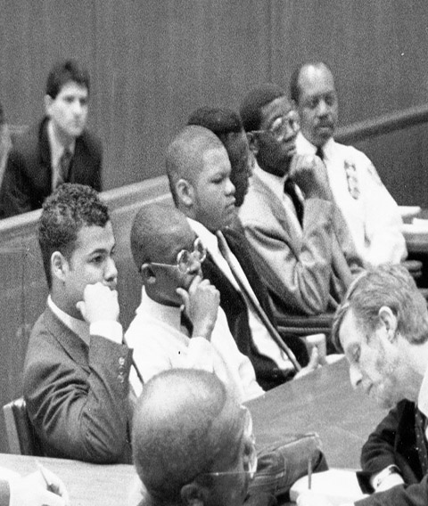

L'AFFAIRE
THE CENTRAL PARK FIVE : l’affaire newyorkaise
L'affaire de la joggeuse de Central Park est une affaire criminelle concernant le viol et les graves blessures infligées à Trisha Meili, une Américaine blanche de 28 ans, qui faisait du jogging, ainsi que l'agression de huit autres personnes dans la partie supérieure de Central Park, à Manhattan, dans la nuit du 19 avril 1989. L'agression de Trisha Meili, qui travaillait dans une banque d'investissement, l'a laissée dans le coma pendant 12 jours et avec de graves séquelles physiologiques et psychologiques.
En 1990, The New York Times écrit que cette affaire est l’« un des crimes les plus médiatisés des années 1980 ».
Ce crime est rapidement présenté dans les médias comme un acte effectué par un gang. La violence et la sauvagerie sont exposés avec le terme wilding, un supposé passe-temps à la mode d'agresser gratuitement les passants dans la rue.
Après plusieurs heures au commissariat, plusieurs jeunes commencent à s'accuser entre eux. De nombreux parents, dont certains ne parlent pas anglais, sont éloignés des salles d'interrogatoire. Peu de membres des familles des jeunes connaissent la justice, ils ne demandent pas la présence d'un avocat.
Face aux promesses de rentrer chez soi après leur confession, plusieurs adolescents accusent les autres membres de leur groupe. Cinq adolescents sont particulièrement ciblés : Raymond Santana, Kevin Richardson, Antron McCray, Yusef Salaam et Kharey Wise. Quatre d'entre eux signent et enregistrent devant la caméra des aveux détaillés, seul Yusef Salaam s'y soustrait par l'intervention de sa mère Sharonne